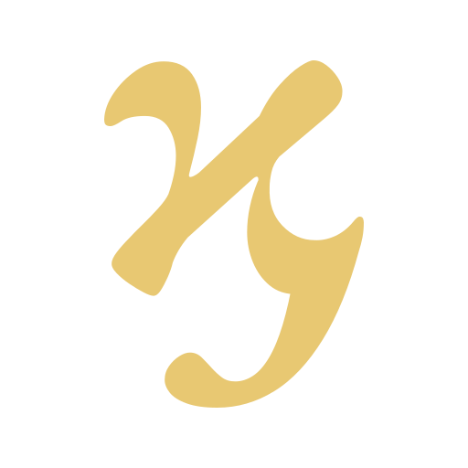
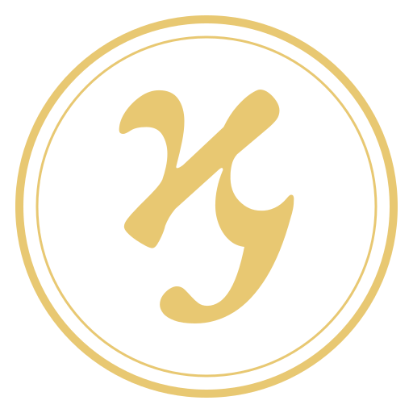
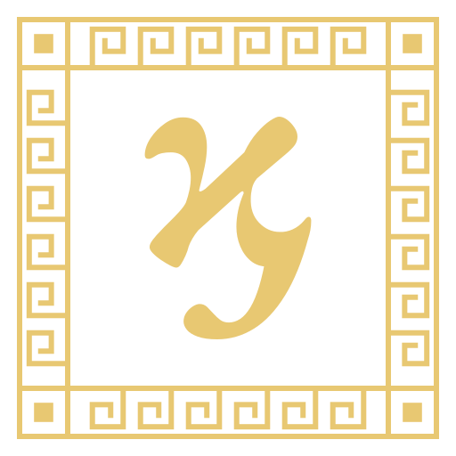
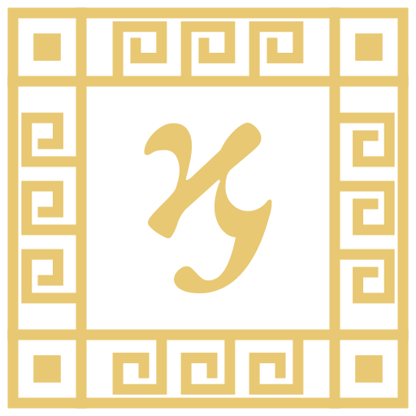
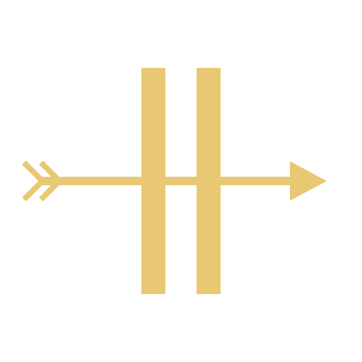
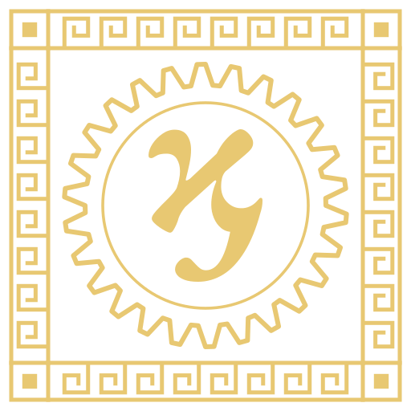

ϗ is the kai compendium (Unicode GREEK KAI SYMBOL, U+03D7), the medieval Greek shorthand for καί, "and": Greek's ampersand. Drawn from EB Garamond's outline. Each mark at full size, then 64, 32 and 16 pixels (favicon sizes).





